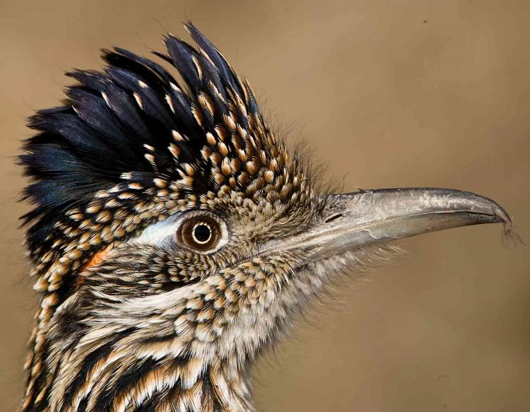

<!--
This template is here to duplicate for when you want to add 2.html, 3.html etc
 -->

<!-- Step By step
1. Search "Big Bruiser Dope Boy" - Replace with author's name
2. Search "SLAB VII" - Replace with work's name
3. Search "maraca.jpg" - Replace with image's name (remember to include .jpg / .png etc with what you replace)
4. Paste in the work, remember to format it (add in <br>, <i>italics</i>, <b>bold</b>)
5. Write in the bio
6. Write in the image credits
 -->


<!DOCTYPE html>
<html lang="en" dir="ltr">
<head>
  <meta charset="UTF-8" />
  <meta name="viewport" content="width=device-width, initial-scale=1.0, user-scalable=no" />
  <link rel="stylesheet" type="text/css" href="../style.css?v=1.1" />
  <link rel="stylesheet" href="https://use.fontawesome.com/releases/v5.6.1/css/all.css" integrity="sha384-gfdkjb5BdAXd+lj+gudLWI+BXq4IuLW5IT+brZEZsLFm++aCMlF1V92rMkPaX4PP" crossorigin="anonymous">

  <link rel="apple-touch-icon" sizes="57x57" href="../favicon/apple-icon-57x57.png">
  <link rel="apple-touch-icon" sizes="60x60" href="../favicon/apple-icon-60x60.png">
  <link rel="apple-touch-icon" sizes="72x72" href="../favicon/apple-icon-72x72.png">
  <link rel="apple-touch-icon" sizes="76x76" href="../favicon/apple-icon-76x76.png">
  <link rel="apple-touch-icon" sizes="114x114" href="../favicon/apple-icon-114x114.png">
  <link rel="apple-touch-icon" sizes="120x120" href="../favicon/apple-icon-120x120.png">
  <link rel="apple-touch-icon" sizes="144x144" href="../favicon/apple-icon-144x144.png">
  <link rel="apple-touch-icon" sizes="152x152" href="../favicon/apple-icon-152x152.png">
  <link rel="apple-touch-icon" sizes="180x180" href="../favicon/apple-icon-180x180.png">
  <link rel="icon" type="image/png" sizes="192x192"  href="../favicon/android-icon-192x192.png">
  <link rel="icon" type="image/png" sizes="32x32" href="../favicon/favicon-32x32.png">
  <link rel="icon" type="image/png" sizes="96x96" href="../favicon/favicon-96x96.png">
  <link rel="icon" type="image/png" sizes="16x16" href="../favicon/favicon-16x16.png">

  <meta name="description" content="" />
  <link rel="canonical" href="http://gaydeathtrance.net" />
  <meta property="og:type" content="website" />
  <meta property="og:title" content="Gay Death Trance" />

  <!-- ### CHANGE ME ### -->
  <meta property="og:description" content="SLAB VII | Big Bruiser Dope Boy" />
  <meta property="og:url" content="http://gaydeathtrance.net" />

  <!-- ### CHANGE ME ### -->
  <meta property="og:site_name" content="SLAB VII | Big Bruiser Dope Boy" />

  <!-- ### CHANGE ME ### -->
  <!-- Make sure you upload the image you want into the images folder! -->
  <meta property="og:image" content="http://gaydeathtrance.net/images/maraca.jpg" />
  <meta name="twitter:card" content="summary_large_image" />

  <!-- ### CHANGE ME ### -->
  <meta name="twitter:description" content="SLAB VII | Big Bruiser Dope Boy" />
  <meta name="twitter:title" content="Gay Death Trance" />
  <meta name="twitter:site" content="@gaydeathtrance" />
  <!-- ### CHANGE ME ### -->
  <!-- Make sure you upload the image you want into the images folder! -->
  <meta name="twitter:image" content="http://gaydeathtrance.net/images/maraca.jpg" />

  <script src="https://ajax.googleapis.com/ajax/libs/jquery/3.3.1/jquery.min.js"></script>

    <!-- ### CHANGE ME ### -->
  <title>SLAB VII | Big Bruiser Dope Boy</title>
</head>

  <body>

    <div id="header">
      <a class="homeLink" href="../index.html">Gay Death Trance</a>
      <a class="link noFlash" href="https://twitter.com/gaydeathtrance" target="_blank"><i class="fab fa-twitter"></i></a>
      <a class="link" href="../about.html">About</a>
    </div>
    <div class="spacer"></div>

    <div class="work">
      <!-- ### CHANGE ME ### -->
      <h1 class="workTitle">SLAB VII</h1>

      <!-- ### CHANGE ME ### -->
      <h2 class="workAuthor">by <a class="authorLink" href="index.html">Big Bruiser Dope Boy</a></h2>

      <!-- ### CHANGE ME ### -->
      
      <p class="workBody">

        I’d begun breaching the subject of my anality during this time. Aside from the occasional peeled vegetable, my main utensil was a toy maraca no longer than a marker with a blue bulb and black handle.
<br><br>	During the second week of two-a-days, when by then I’d been conditioned to them enough to indulge in the off time, I pushed the maraca up too far in an especially adventurous session and it got swallowed and lost inside me. The round bottom of the handle slipped past the seal and I couldn’t get a hold of its polymer surface with my greasy fingers&mdash;only brush the end. I tried to push it out like I would a stool, but the shape of it was such that it kept involuntarily getting pulled back in. I felt the grit shaking as I walked to the bathroom. I couldn’t shit it out on the toilet either. I had to get to practice. I left for campus with it still inside.
<br><br>	Coach L, the offensive line coach, had us doing a drill that focused on keeping our feet moving during pass protection. We each partnered up with another lineman and took turns being the pass rusher. The idea was, if you moved your feet quickly enough while keeping a low center of gravity, it was harder to get around or bull rush through your blocking.
<br><br>	“Move your feet, [X]!”
<br><br>	My partner shoved me onto my back.
<br><br>	“Damn it, [X], what’d I just say?! Get low and move your feet or he’s gonna put you on roller skates like that every time. Let’s reset and go again.”
<br><br>	Coach L blew his whistle.
<br><br>	“Chop those feet!”
<br><br>	The maraca’s sand jiggled in rhythm. Coach L’s command worked&mdash;I was doing a better job holding off the pass rush.
<br><br>	I heard the whistle again.
<br><br>	“The hell is that noise? What’s goin’ on&mdash;is one of y’all bein’ funny?”
<br><br>	The linemen looked at one another in merry perplexity and I joined them. My sphincter fastened. The maraca rose through my guts to my throat, then floated above my head like a siren of sin. Coach L grabbed the collar of my shoulder pads and pulled me toward him.
<br><br>	“What the fuck is this, [X]?” He snatched the levitating icon.
<br><br>	“It’s a maraca, sir.”
<br><br>	“A <i>what</i>-ka? How’d this get out here? You tryin’ out for jazz ensemble?”
<br><br>	“No sir&mdash;I was using it to stimulate my prostate.”
<br><br>	He released his grip on my collar, took a step back.
<br><br>	“Ah, uh&mdash;well, [X], that’s very resourceful of you.”
<br><br>	He put the maraca’s bulb in his mouth and started sucking on it. He ruminated awhile, twirling the handle between his thumb and forefinger, the bulb rotating in his cheek.
<br><br>	“You know, [X], I’ve never seen a guy your size move like you. Way I see it, there’s no reason you shouldn’t be dominating whoever you line up across from. Every play you gotta chop your feet like that.”
<br><br>	“Yessir.”
<br><br>	He yanked the maraca from his mouth while tensing his lips in a circle, making a wet popping sound.
<br><br>	“You’re gettin’ enough fiber I see.” He winked.
<br><br>	The water break whistles blew.
<br><br>	Coach L slapped my buttock. The maraca shook. “Attaboy, [X].”
<br><br>	As I jogged to the tank, the maraca continued to shake.
      </p>
    </div>

    <div class="bioHolder">
    <p class="authorBio">

    <!-- Put the name in the <b> </b> to make it bold. Paste everything else. -->
    <!-- ### CHANGE ME ### -->
    <b>Big Bruiser Dope Boy</b> 's first full-length poetry collection is available from <a style="text-decoration: underline;" href="https://www.clashbooks.com/new-products-2/big-bruiser-dope-boy-foghorn-leghorn" target="_blank">CLASH Books</a>.
    </p>

    <!-- ### CHANGE ME ### -->
    <p class="imgCredit">Photograph: Maracas</p>
    </div>

  </body>
</html>
